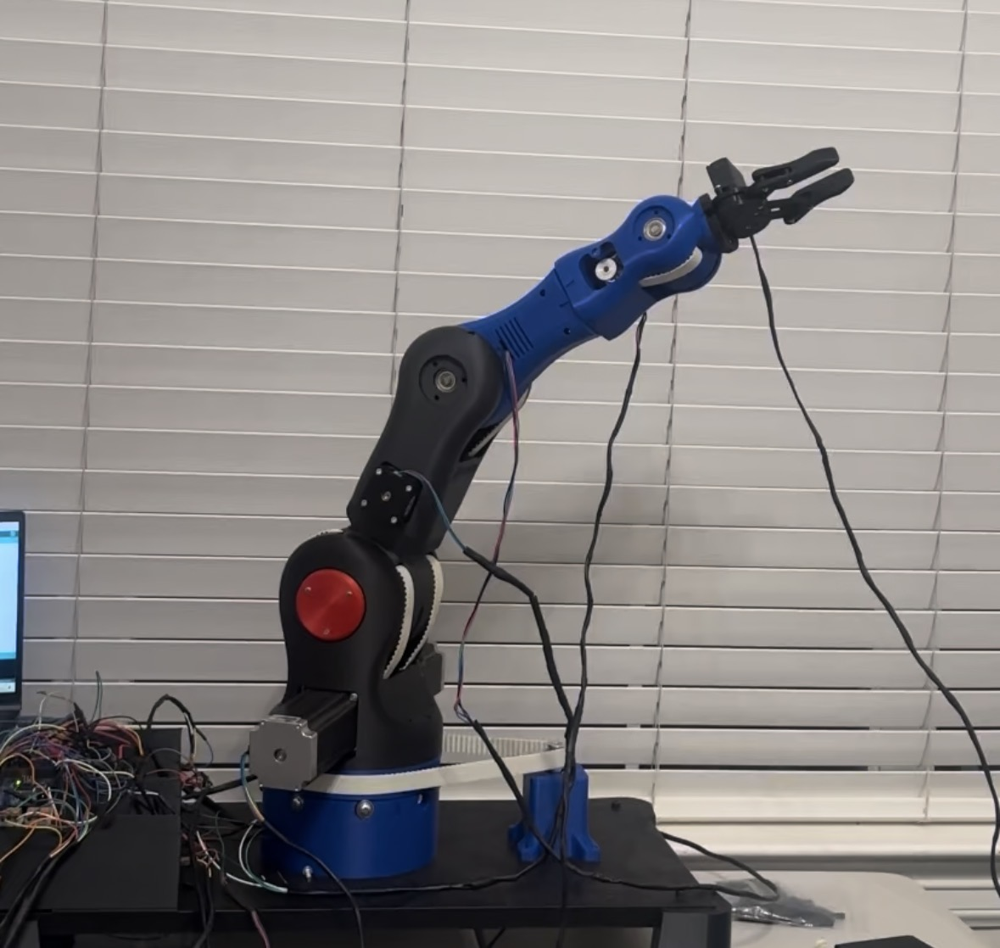

ASME UH • March 2025
6-Axis Robotic Arm
A six-axis robotic arm developed through ASME UH using six stepper motors, Arduino firmware, a custom Arduino joystick remote, and a 24 V / 25 A electrical power system.

OVERVIEW
Building a Remote-Controlled Six-Axis Robotic Arm
This project was developed through the American Society of Mechanical Engineers at the University of Houston.
The robotic arm used six stepper motors to create motion across six axes. I developed Arduino firmware for motor control and built a custom remote using Arduino-compatible joysticks so the operator could manually command the arm's movement.
MY ROLE
Firmware, Remote Control & Electrical System
I wrote the Arduino firmware used to control the six stepper motors and developed the joystick-based remote control used to command the robotic arm.
I also engineered the electrical system that distributed power from a 24 V / 25 A power supply to six stepper motor drivers.
CONTROL SYSTEM
Joystick Remote → Arduino → Six-Axis Motion
The custom remote uses joystick movement as the operator input. Arduino code interprets those joystick positions and converts them into motor-control commands for the arm.
The stepper motor drivers receive the control signals and drive the six stepper motors, allowing the user to manually position the robotic arm through its different axes.
Joystick Remote
A custom Arduino-based remote uses joystick inputs to command arm movement.
Arduino Firmware
Firmware interprets the operator input and generates the required motor commands.
Six Motor Drivers
Six stepper motor drivers interface between the controller and the motors.
Six Stepper Motors
Six stepper motors provide controlled movement across the robotic arm.
ELECTRICAL DESIGN
24 V / 25 A Power Distribution
I engineered a circuit capable of handling the 24 V / 25 A power supply and distributing power to all six stepper motor drivers.
The electrical system was built for repeated use and durability. Wiring connections were soldered to reduce loose connections, cooling fans were incorporated for thermal management, and the electronics were organized inside a custom 3D-printed electrical enclosure.
PROJECT OVERVIEW
Robotic Arm Walkthrough
This video provides a closer look at the completed robotic arm, its mechanical structure, electronics, and custom control system.
DEMONSTRATION
Remote-Controlled Robotic Arm in Operation
This demonstration shows the robotic arm responding to commands from the custom joystick remote and moving through its controlled axes.